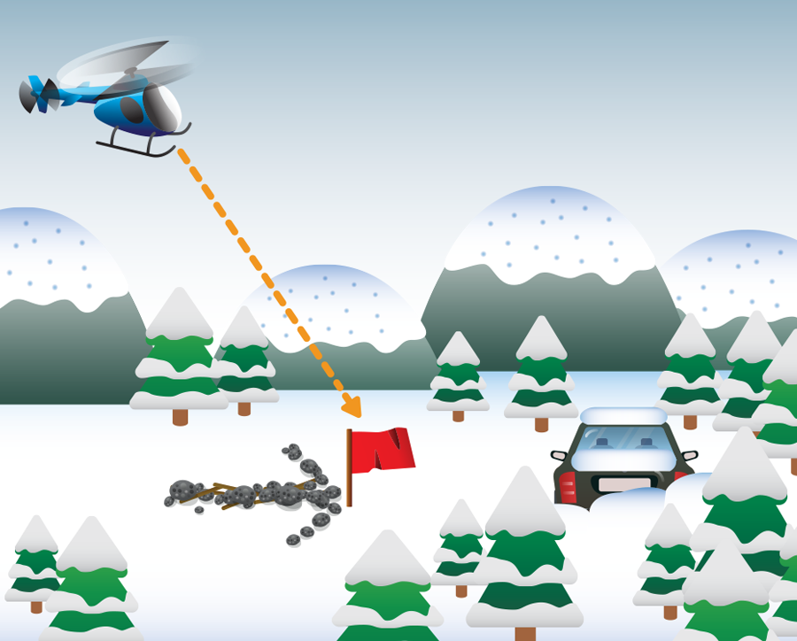

운행이 가능하다면 가까운 휴게소로 대피합니다. 운행이 불가능하며 눈이 계속 내리고 있고, 대피소가 1km 이상 떨어져 있다면 걸어가지 말고 차 안에 머무릅니다.
1시간마다 10분씩 엔진과 히터를 가동시켜 실내를 따뜻하게 유지합니다. 야간에는 전조등과 실내등을 주기적으로 켜서 제설 작업자나 구조대가 알아볼 수 있게 합니다.
배기구 주변의 눈을 자주 치워줍니다. 배기구가 막히면 시동을 걸었을 때 차 안으로 일산화탄소가 들어오게 됩니다.
잠은 교대로 잡니다. 구조대가 지나간다면 알 수 있도록 누군가는 깨어 있어야 합니다. 차 안에서 되도록 몸을 움직여 체온을 유지하고 물을 자주 마셔서 탈수를 방지합니다.
눈을 퍼서 바로 입에 넣으면 체온이 크게 떨어집니다. 컵에 담아 실내에서 녹여서 마셔야 합니다.
눈보라가 그치면 차를 버리고 가까운 휴게소나 대피소로 이동합니다. 단, 1.5km 이상 떨어져 있다면 계속 차 안에 머물며 구조를 대기합니다. 보통의 여성과 아동은 눈이 쌓인 길을 1.5km 못 가서 탈진하게 됩니다.

근처에 원색 천을 걸어 구조대가 쉽게 찾을 수 있게 합니다. 차량이 멈춰 선 곳이 상공에서 눈에 잘 띄지 않는다면 개방된 구역에 조난 표시를 해 두세요.
연료의 양이 곧 히터를 틀 수 있는 양입니다. 겨울철에는 차량에 연료가 중간 정도 남으면 가득 채워두고 스노우체인, 휴대전화 충전케이블, 빗자루, 배터리 점퍼케이블, 로프, 손전등, 담요, 식수와 스낵을 구비해 두도록 합니다.